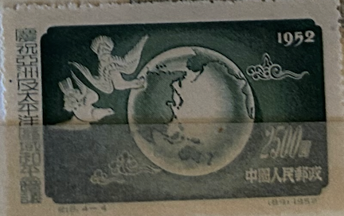
| SOURCE | TITLE| IMAGE MATCH | click to source page |
| www.ebay.com | People's Republic of China Scott #170 Mint No Gum As Issued ... |  |
| www.hipstamp.com | China Stamp:1952 SC# 170-Peace Dove Over Pacific-Cto Stamp ... | 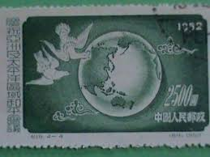 |
| findyourstampsvalue.com | Peace Conference of the Asian and Pacific Regions: Doves and ... |  |
| www.etsy.com | Set of 4 1952 China Stamps | - Etsy |  |
| www.ebay.com | 1952 China Asian Pacific Peace Conference Stamp #348st | eBay | 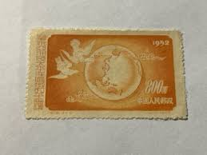 |
| en.todocoleccion.net | china 1952 asian pacific peace conference. usad - Buy ... | 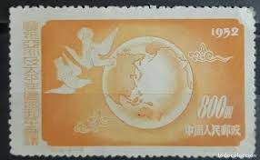 |
| www.shutterstock.com | 6+ Thousand China Vintage Post Stamp Royalty-Free Images ... | 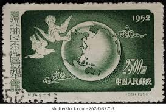 |
| www.facebook.com | Redphoenix621 - China Stamp 800 Dollars Freedom Conference ... | 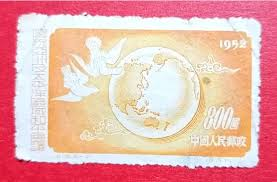 |
| findyourstampsvalue.com | Peace Conference of the Asian and Pacific Regions: Doves and ... | 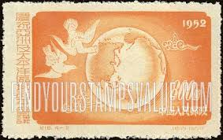 |
| www.ebay.fr | China 1952 Asian Pacific Peace Conference CHINE Timbre Neuf ... | 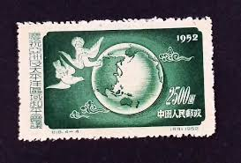 |
| www.xabusiness.com | C18 Scott 167-170 Asian Pacific Peace Conference - China Stamps | 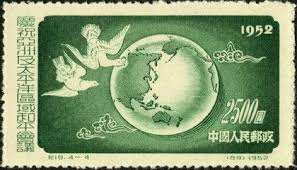 |
| www.tradera.com | Se produkter som liknar Kina 1952 - 2500 dollar.* på Tradera ... | 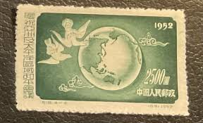 |
| aukro.cz | Čína od koruny - strana 26 | Aukro | 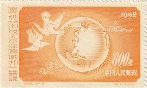 |
| www.hipstamp.com | China Stamp:1952 SC# 167-Peace Dove Over Pacific-Cto Stamp ... | 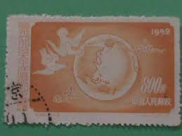 |
| www.shutterstock.com | Beijing China May 7 2025 Old Stock Photo 2628587955 ... |  |
| www.amazon.com | Prophila Collection People's Republic of China ... - Amazon.com | 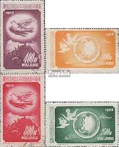 |
| m.bunjang.co.kr | 중국우표)1952년 태평양지구평화회의기념 2종8,000(미세한 힌지 ... | 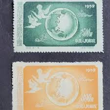 |
| www.ebay.com | CHINA LOT OF 2 STAMPS ( SOUV D4 ) BB 11 | eBay |  |
| jiangsu.chinapost.com.cn | 庆祝亚洲及太平洋区域和平会议- 中国集邮有限公司 | 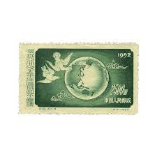 |
| en.todocoleccion.net | china-republica popular- 1952 -* - conferencia - Buy Antique ... | 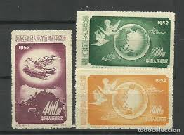 |
| www.instagram.com | These are commemorative postage stamps from Chile, issued by ... | 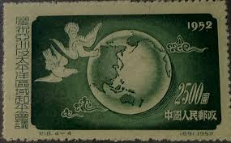 |
| tw.bid.yahoo.com | 嚴選紀18亞太新票全精選郵票上品微黃無損新中國紀特文編郵票滿 ... | 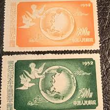 |
| m.bunjang.co.kr | 중국우표)1952년 태평양지구평화회의기념 3종 | 브랜드 중고거래 ... | 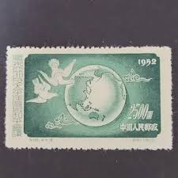 |
| margipood.ee | c-14 1952 - Margipood | 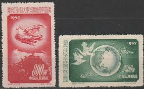 |
| torob.com | خرید و قیمت سری تمبر باارزش قطعه بزرگ کلاسیک چین | ترب | 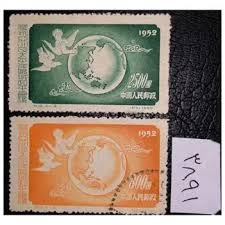 |
| www.sohu.com | 庆祝亚洲及太平洋区域和平会议》纪念邮票_搜狐网 | 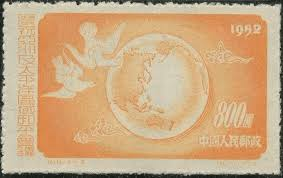 |
| www.mysticstamp.com | 1129 - 1959 8c World Peace through World Trade - Mystic ... | 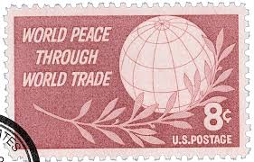 |
| www.linns.com | Kelleher and Rogers June 11-12 sale offers range of China ... | 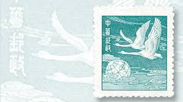 |
| www.tradera.com | Se produkter som liknar Kina på Tradera (712043926) | 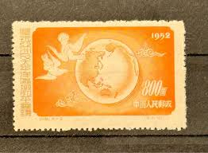 |
| margipood.ee | c-1 1952 - Margipood | 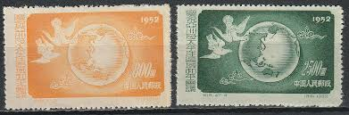 |
| www.freestampcatalogue.com | Stamps from Japan with the theme Birds - Freestampcatalogue ... | 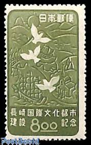 |
| www.britannica.com | Yen | Exchange rate, value, Japan | Britannica Money | 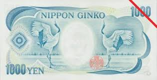 |
| littlepostagehouse.com | Search for Peace Postage Stamp — Little Postage House | 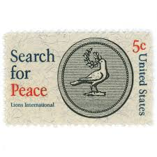 |
| www.istockphoto.com | Old Stamp From Lebanon Stock Photo - Download Image Now ... | 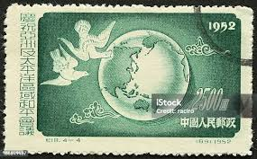 |
| drakopanda.com | Мирная конференция для Азии и Тихого океана. Конференция ... | 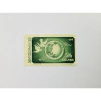 |
| www.xabusiness.com | 1952 China Stamps | 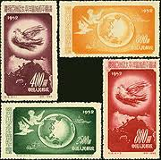 |
| www.ebay.co.uk | CHINESE POSTAGE STAMP PEACE DOVES OVER THE PACIFIC 1952 ... | 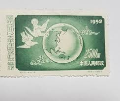 |
| www.etsy.com | 1942 Japan Malaya 10 Dollars Note - WWII Occupied Malaysia ... | 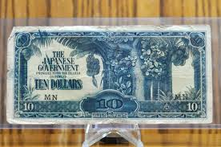 |
| www.post.gov.tw | The Postal Universal Website of R.O.C ─ Stamp House - Pages | 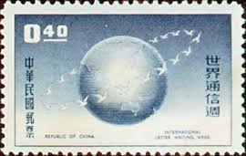 |
| commons.wikimedia.org | File:Series D 1K Yen Bank of Japan note - back.jpg ... | 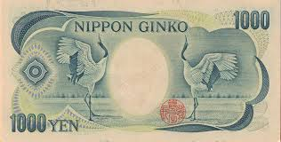 |
| www.thejapanguy.com | The Japanese Yen - The Japan Guy | 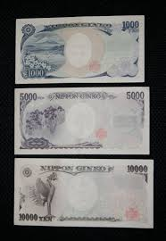 |
| en.wikipedia.org | Postage stamps and postal history of Japan - Wikipedia | 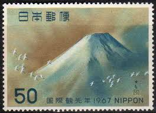 |
| www.youtube.com | Old 1,000 Yen Japanese Note - YouTube | 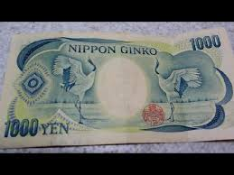 |
| www.post.gov.tw | The Postal Universal Website of R.O.C ─ Stamp House - Pages | 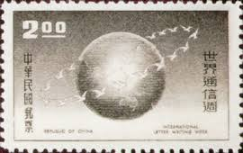 |
| cointown.com | 1974 Franklin Mint Christmas Holiday PEACE DOVE Coin Medal ... | 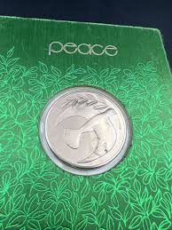 |
| katzauction.com | Japan 1000 Yen 1993 (ND) PMG 67 EPQ Superb Gem UNC | Katz ... | 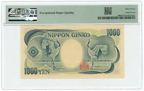 |
| www.carousell.sg | JPY Japanese Yen note Japan 1000 note, Hobbies & Toys ... | 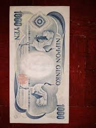 |
| www.bidcurios.com | 10 Rupees I.G.Patel Peacock Inset Letter A Banknote (74G ... | 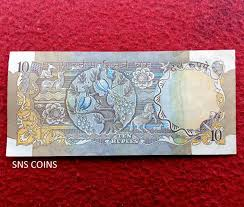 |
| holidaydollarbills.com | Tooth Fairy Dollar Bills Gift Package: Milestone Kit. 1st ... | 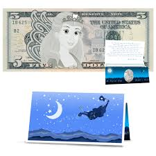 |
| www.reddit.com | Modern Japanese banknotes look awesome : r/Banknotes | 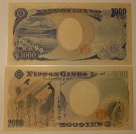 |
| www.behance.net | Five pound note with a capercaillie, and the Shetland Islands ... | 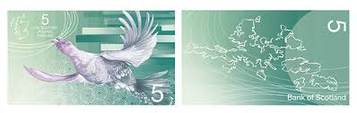 |
| en.todocoleccion.net | este de china.-año 1952 num. 191 catalogo stamp - Buy ... | 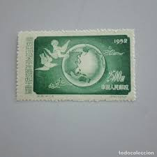 |
| us.amazon.com | Amazon.com: IMPACTO COLECCIONABLES World Paper Money: 5 ... | 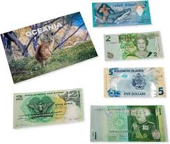 |
| www.royalmint.com | Queen Elizabeth II 1989 New Zealand $2 Banknote | The Royal Mint | 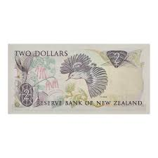 |
| www.bloomberg.com | A Trader's Guide to Japanese Policymakers' Language on the ... | |
| www.polymernotes.com | New Zealand S1R1, 10 dollars, 1999, P190b, BNP104, UNC ... | |
| www.yistamp.com | 易邮网-邮票图片成交价格查询平台 | |
| www.facebook.com | These seven dollarydoo notes are priceless! 💰 This cash ... | |
| galeriasavaria.hu | Ázsiai Békekonferencia 1952 - postatiszta bélyegek ... |
{kind=link}